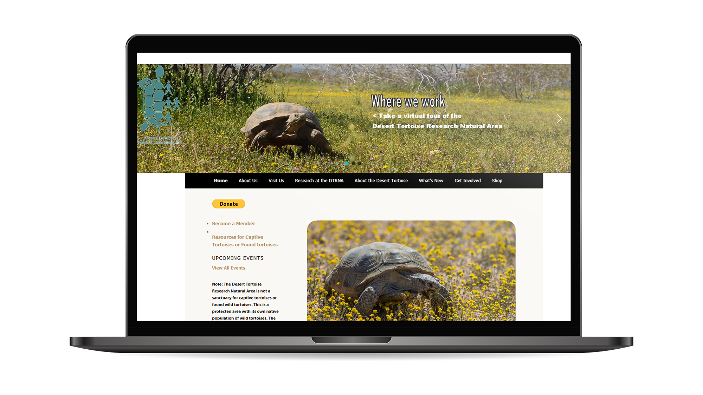
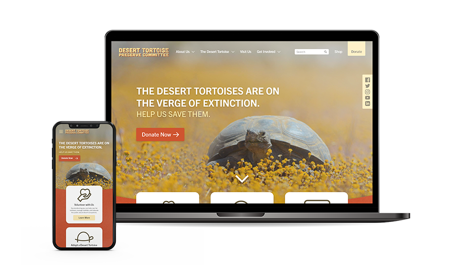
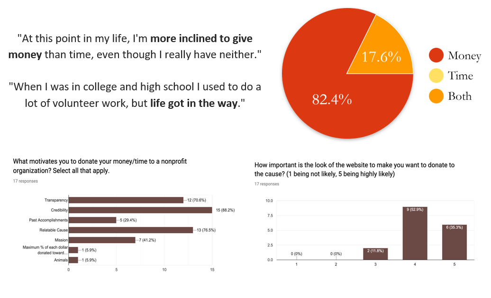
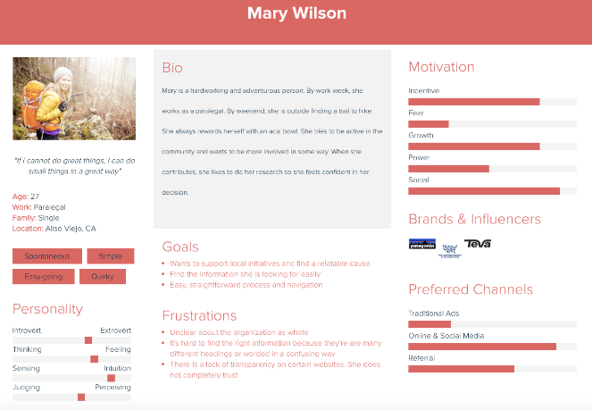
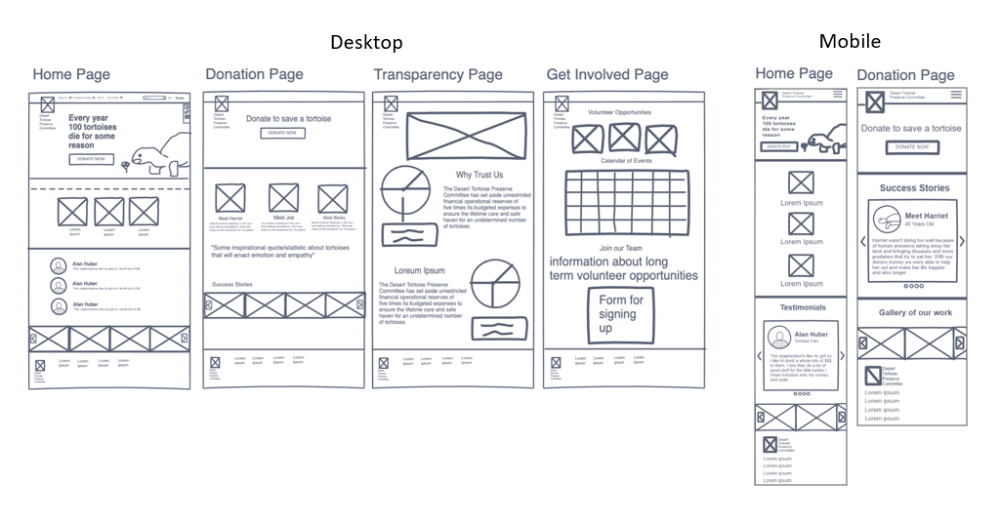
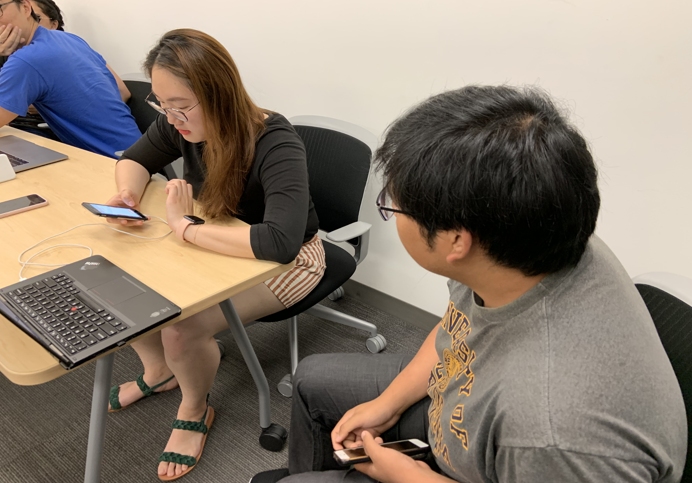
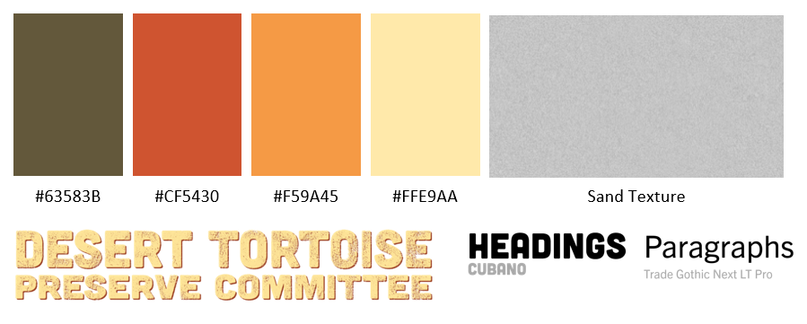
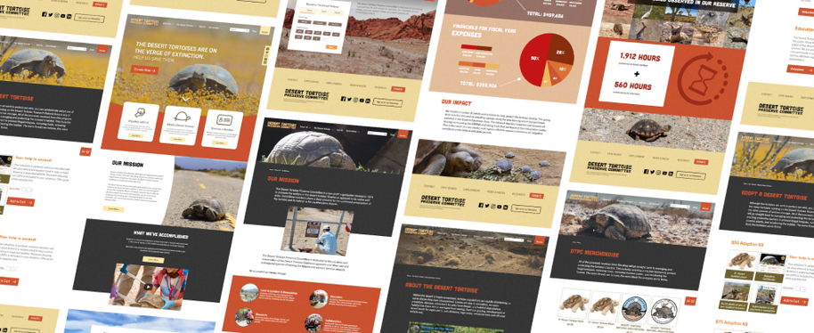

This project involved the restructuring and redesign of a nonprofit organization's website, namely that of the Desert Tortoise Preserve Committee (DTPC). DTPC dedicates itself to saving the endangered desert tortoise.
My Role: UX/UI Designer
Tools Used: Adobe XD, Photoshop, Illustrator, InVision, Miro/RealTimeBoard, Trello
Timeframe: 2 weeks
The Problem: http://www.tortoise-tracks.org/
The main issue with DTPC's website is the lack of call-to-action for users. Although there is a donate button at the top of the page and the navigation is decent, it is unclear from the homepage what the priorities of the organization are and the actions visitors to the site could take. Users also may not feel comfortable donating their money to an organization that doesn’t show how they spend their funds. In addition, the overall visual design of the website could be greatly improved to improve credibility.
The Solution
The DTPC website should highlight the allocation of its funds and utilize a more inviting design with prominent calls to action to entice users to donate, volunteer, or learn more about the mission.
User Research
User interviews and surveys were conducted in order to gain insight into how users contribute to nonprofit organizations, namely through donating or volunteering, in addition to what website features factor into their decision to contribute.
Results showed that all users primarily donate to nonprofits due to a lack of time for volunteering, and that visual design, transparency and credibility play a major role into whether or not they contribute. Therefore, it is important that users have an emotional connection to the cause through transparency and credibility. Users should be able to see where money is going and the website should be welcoming and look professional.
User Persona
Using data from the interviews and survey responses, the following persona was generated to stay oriented towards user needs and frustrations throughout the design process.
Sketches and Low-Fidelity Wireframes
With focus on a user flow that involves donating and volunteering, the following wireframes were made for both a desktop and mobile version of the website.
User Testing
User testing was conducted with the goal of allowing the user to explore the website and ensuring that the donation process is straightforward and easy to understand. Overall, the process was fairly straightforward to users, with most of the changes involving the visual design and consistency across pages. The donation process was changed, however, such that the donation button leads directly to a donation form to make the process more efficient.
Style
When creating high-fidelity wireframes, an overall style was planned out to keep pages consistent. Rather than using green colors, which are commonly associated with tortoises, warm tones were used to imitate the mood of a California desert, where desert tortoises inhabit. In addition, sandy textures were used for both the redesigned logo and in backgrounds throughout the pages to further imitate a desert aesthetic. The fonts chosen are commonly used in outdoors-related graphics and fit well with the desired theme.
High-Fidelity Wireframes
Taking into consideration the results from user testing, several pages from the website were reconstructed with visual design and consistency as priority. Major focus was especially put onto the home page, ensuring that there were clear call-to-actions for the users and that the mission and accomplishments of the organization were displayed to promote credibility.
Final Prototype
The final prototype makes use of the generated wireframes and features responsive design for mobile and desktop browsers.
Desktop Prototype: Click Here
Mobile Prototype: Click Here